Portfolio
3D environment art, hard-surface assets, materials, lighting, and cinematic scene work by Lucas Miner.
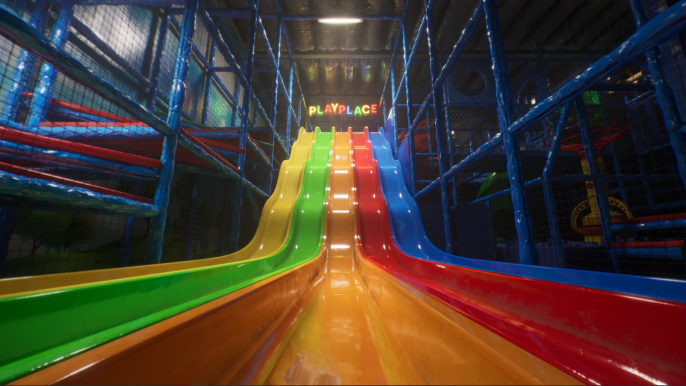
Subliminal
Lead Environment Artist work for a Steam-released first-person psychological horror game.
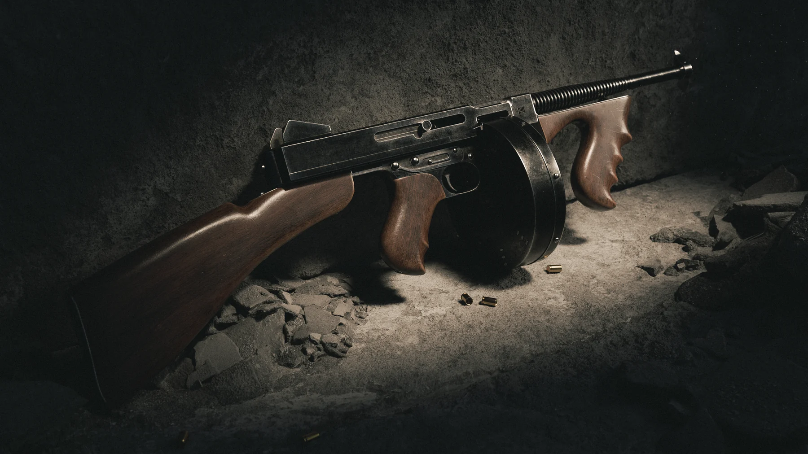
Thompson
A detailed weapon asset focused on clean modeling, textures, and presentation.
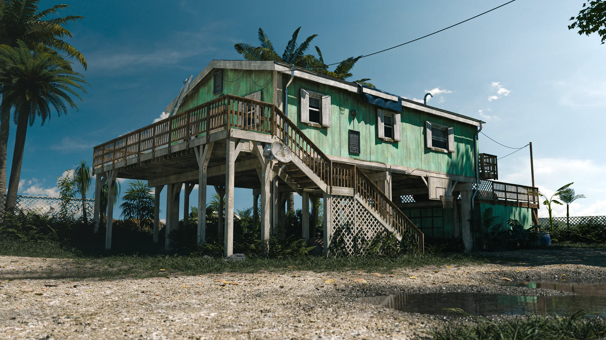
GTA VI Inspired Scene
A personal cinematic scene study focused on mood, lighting, and composition.
Subliminal
Lead Environment Artist · Steam-released first-person psychological horror game.
Environment work created for Subliminal, with a focus on realistic spaces, atmosphere, set dressing, materials, lighting, and visual polish.
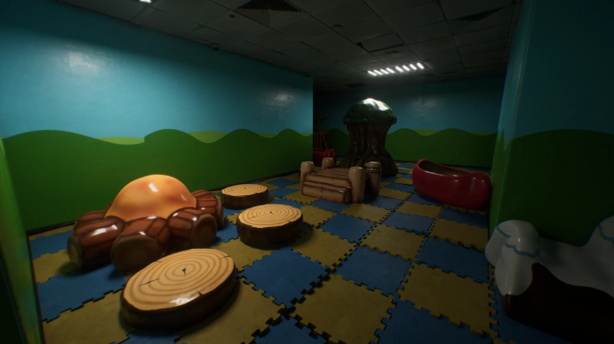
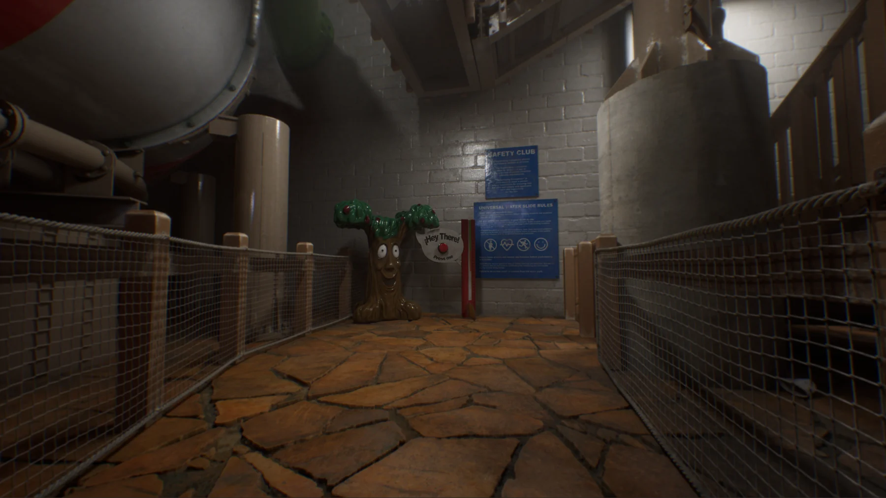
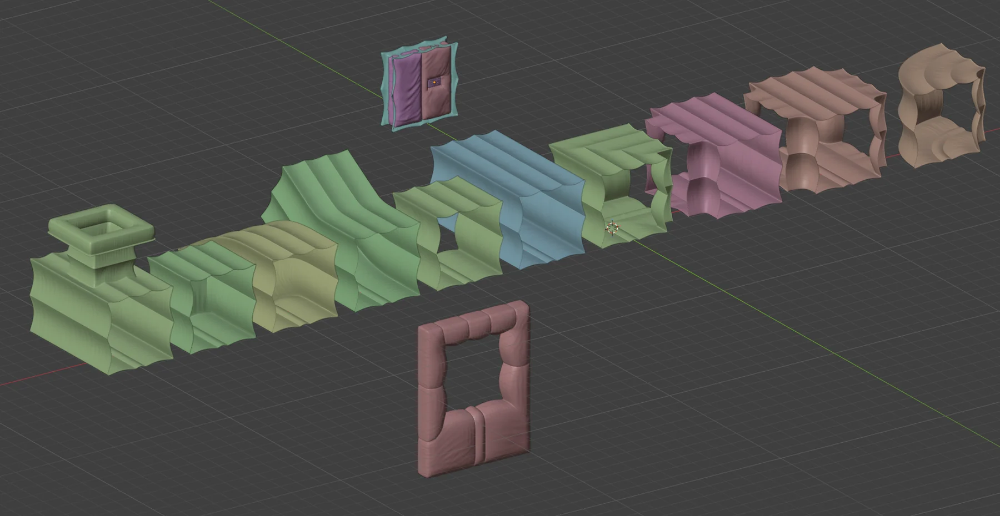
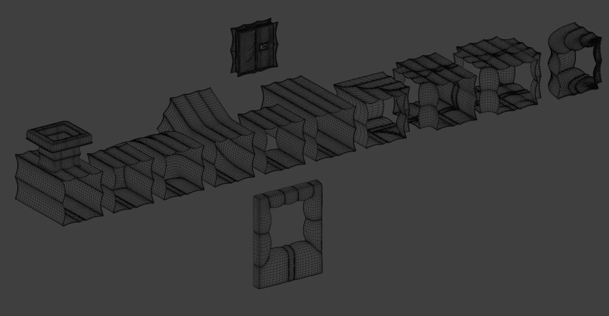
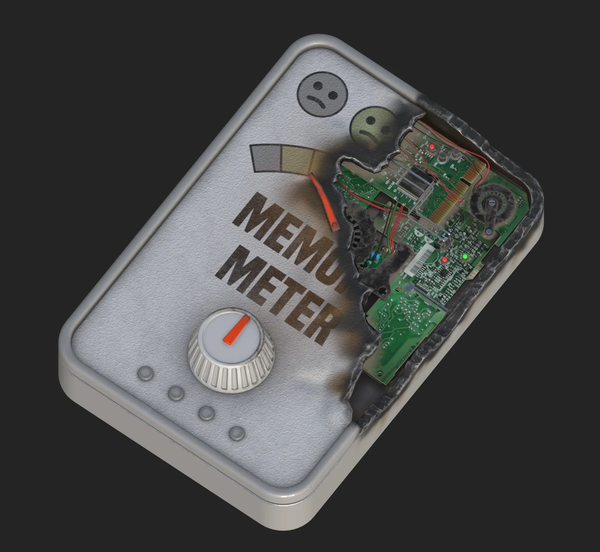
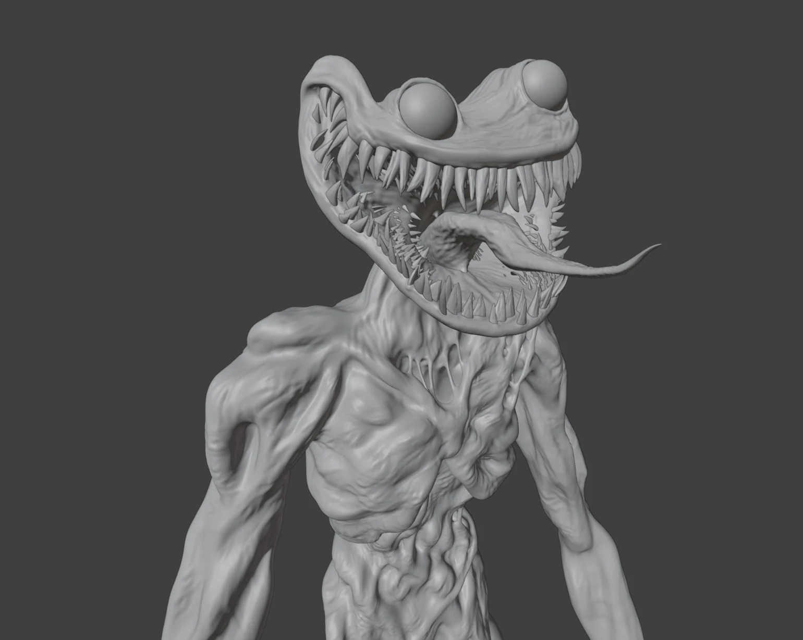
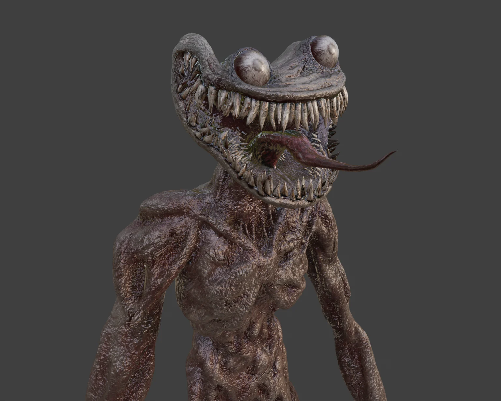
Thompson
Personal 3D asset focused on modeling, texture work and presentation.
A detailed hard-surface weapon asset built to show clean modeling, UVs, materials, and final render presentation.
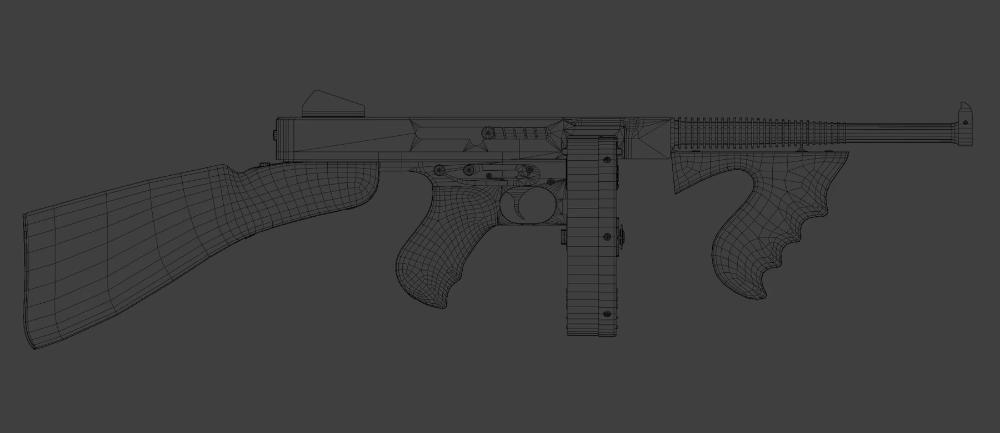
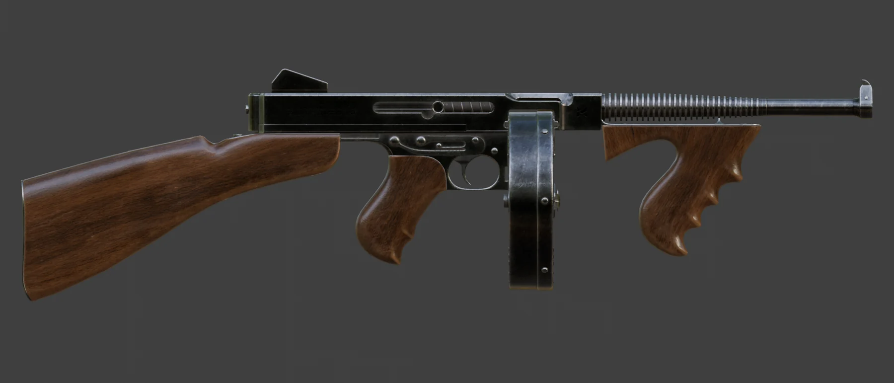
GTA VI Inspired Scene
Personal recreation focused on lighting, camera matching, mood and composition.
A stylized realistic scene recreation made as a visual study. The goal was to match the cinematic feeling, environment layout, and lighting language of the reference.
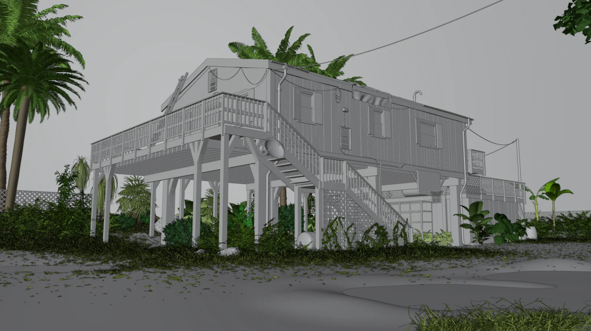
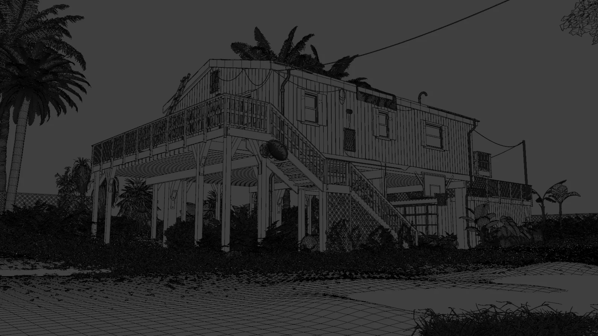
Available for 3D environment work
Based in Argentina and open to relocation or remote work.
Contact me